Overview
ggblanket is a package of ggplot2 wrapper functions.
The primary objective is to simplify ggplot2 visualisation.
Secondary objectives relate to:
- Design: produce well-designed visualisation
- Alignment: align with ggplot2 and tidyverse
- Scope: cover much of what ggplot2 does.
Computational speed has been traded-off.
How it works
- First setup with
set_blanket() - Each
gg_*function wraps a geom - A merged
colargument to colour/fill by a variable - A
facetargument to facet by a variable - A
facet2argument to facet by a 2nd variable - Other aesthetics via
mappingargument - Prefixed arguments to customise x/y/col/facet
- Smart
*_labeldefaults for axis and legend titles - Other
ggplot2::geom_*arguments via... - Families of
*_mode_*themes with legend variants - Side-effects to the
themebased on thetheme_orientation - One
*_symmetriccontinuous scale - Ability to add multiple
geom_*layers - Arguments to customise setup with
set_blanket() - A
gg_blanket()function withgeomflexibility
library(dplyr)
library(stringr)
library(ggplot2)
library(scales)
library(ggblanket)
library(palmerpenguins)
library(patchwork)
penguins2 <- penguins |>
labelled::set_variable_labels(
bill_length_mm = "Bill length (mm)",
bill_depth_mm = "Bill depth (mm)",
flipper_length_mm = "Flipper length (mm)",
body_mass_g = "Body mass (g)",
) |>
mutate(sex = str_to_sentence(sex)) |>
tidyr::drop_na(sex) 1. First setup with set_blanket()
The set_blanket() function should be run first.
This sets the default style of plots with themes and colours etc. It can be customised.
It should be run at the start of every script or quarto document.
2. Each gg_* function wraps a geom
Each gg_* function wraps a
ggplot2::ggplot() function with the associated
ggplot2::geom_*() function.
Almost every geom in ggplot2 is wrapped.
Position related aesthetics can be added directly as arguments.
penguins2 |>
gg_point(
x = flipper_length_mm,
y = body_mass_g,
)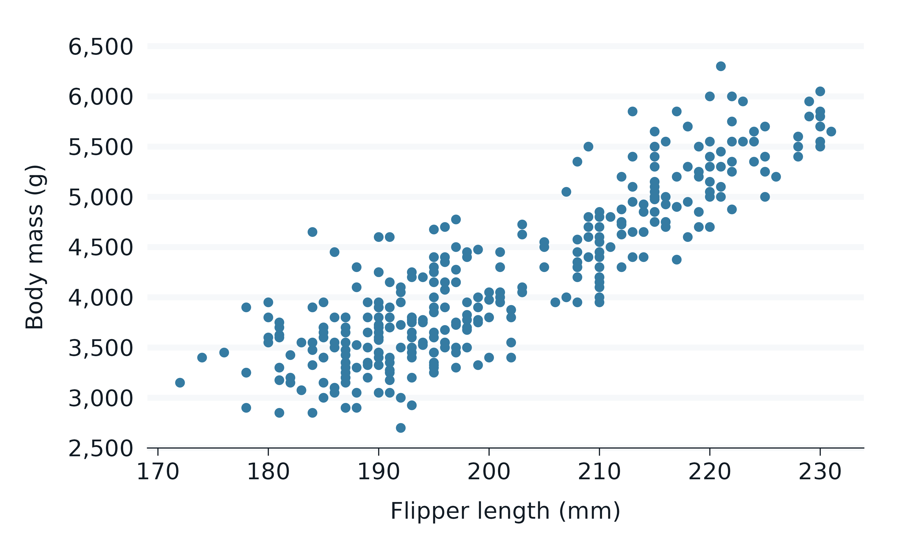
3. A merged col argument to colour/fill by a
variable
The colour and fill aesthetics of ggplot2 are merged into a single
concept represented by the col argument.
When the col argument is added, this means that outlines
and interiors are coloured/filled by the col
variable using the col_palette.
The defaults used in set_blanket for the polygon-ish
geoms generally use linewidth = 0 to make things work
nicely.
penguins2 |>
gg_violin(
x = flipper_length_mm,
y = island,
col = sex,
)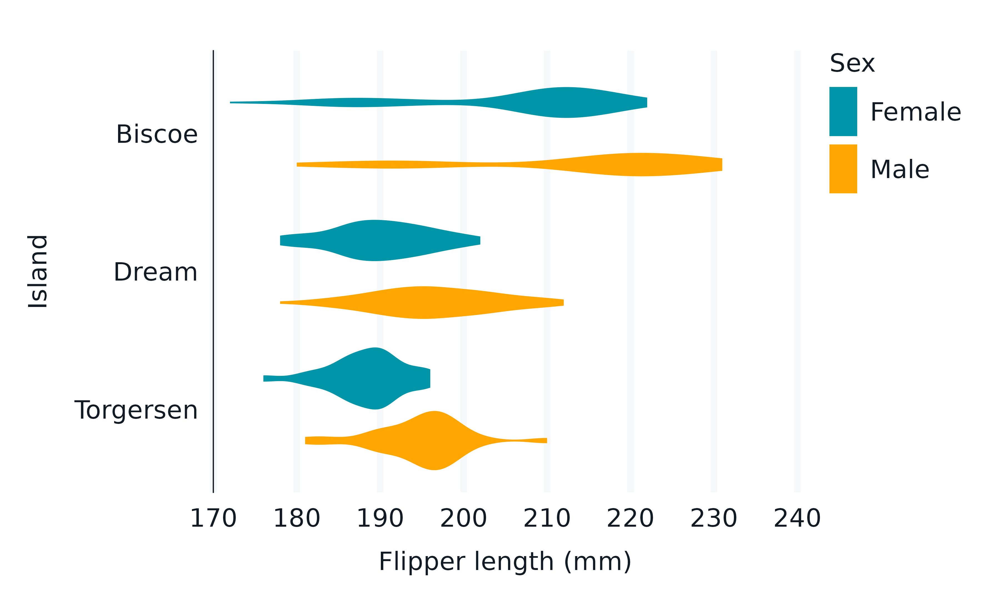
4. A facet argument to facet by a variable
Users provide an unquoted facet variable to facet
by.
When facet is specified, the facet_layout
will default to a "wrap" of the facet variable
(if facet2 = NULL).
penguins2 |>
gg_histogram(
x = flipper_length_mm,
facet = species,
)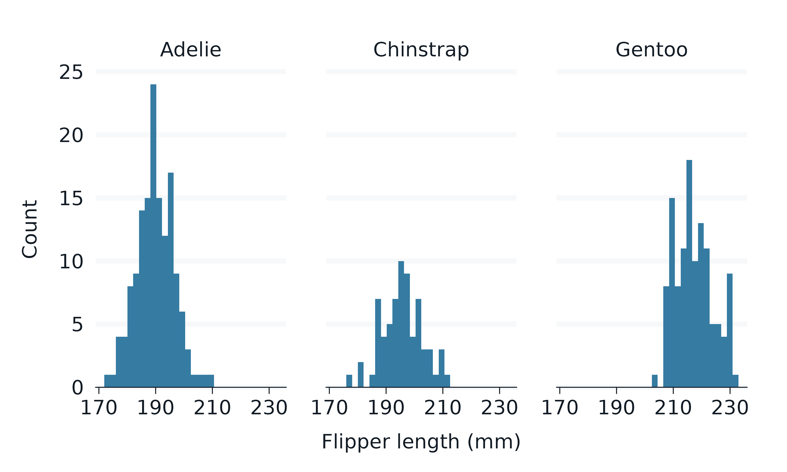
5. A facet2 argument to facet by a 2nd variable
Users can also provide an unquoted facet2 variable to
facet by.
When facet2 is specified, the facet_layout
will default to a "grid" of the facet variable
(horizontally) by the facet2 variable (vertically).
penguins2 |>
gg_histogram(
x = flipper_length_mm,
facet = species,
facet2 = sex,
)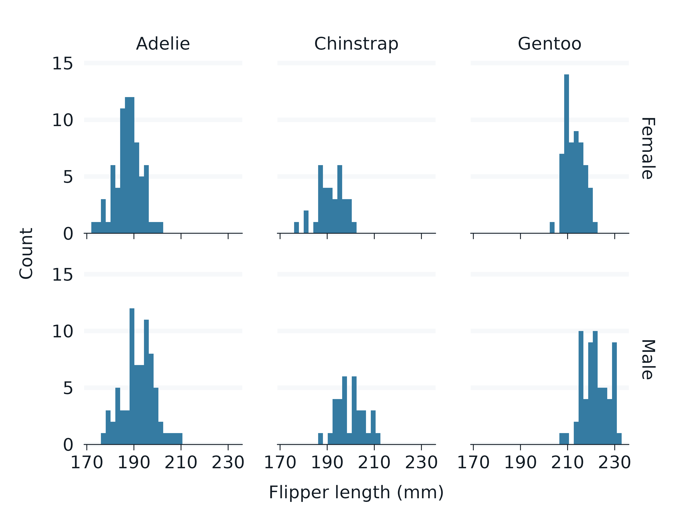
6. Other aesthetics via mapping argument
Some aesthetics are not available via an argument
(e.g. alpha, size, shape,
linetype and linewidth).
These can be accessed via the mapping argument using the
aes() function.
To customise the scales/guides of these other aesthetics, just
+ on the applicable ggplot2 layer. In some situations, you
may need to override the colour used in the guide, or reverse the values
in the relevant scale etc.
penguins2 |>
gg_jitter(
x = species,
y = flipper_length_mm,
col = island,
mapping = aes(shape = sex),
) +
guides_shape_grey()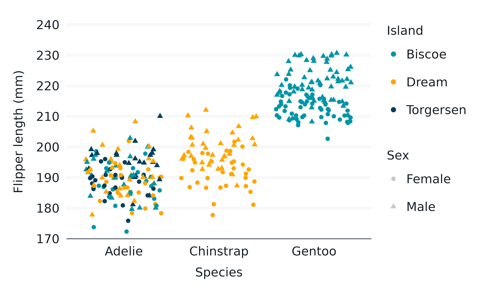
7. Prefixed arguments to customise x/y/col/facet
There are numerous arguments to customise plots that are prefixed by
whether they relate to x, y, col
or facet.
For x, y and col, these relate
to associated arguments within ggplot2 scales and guides. For
facet, they relate to associated arguments within
ggplot2::facet_wrap and
ggplot2::facet_grid.
Scales and guides associated with other other aesthetics can be customised by adding the applicable ggplot2 layer.
penguins2 |>
gg_jitter(
x = flipper_length_mm,
y = body_mass_g,
col = bill_length_mm,
x_breaks_n = 4,
x_label = "Flipper length",
x_labels = \(x) paste0(x, " mm"),
y_limits_include = 1000,
y_labels = label_number(big.mark = " "),
y_transform = "sqrt",
col_label = "Bill\nlength (mm)",
col_steps = TRUE,
col_breaks = \(x) quantile(x, seq(0, 1, 0.25)),
col_palette = viridis::rocket(n = 9, direction = -1),
)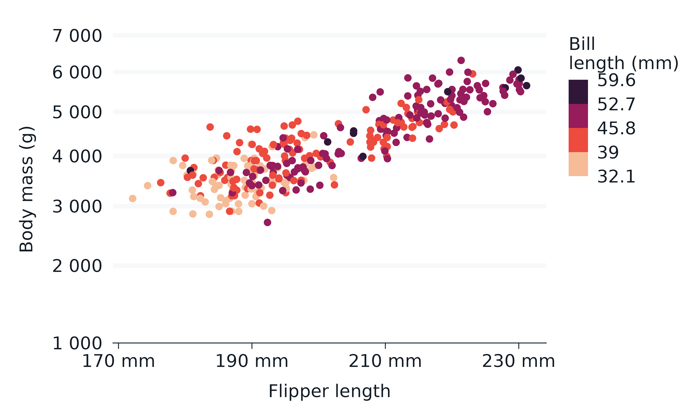
8. Smart *_label defaults for axis and legend
titles
The x_label, y_label and
col_label for the axis and legend titles can be manually
specified with the applicable *_label argument (or
+ ggplot2::labs(...)).
If not specified, they will first take any label attribute associated with the applicable variable.
If none, they will then convert the variable name to a label name
using the label_to_case function, which defaults to
sentence case (i.e. snakecase::to_sentence_case).
penguins2 |>
gg_freqpoly(
x = flipper_length_mm,
col = species,
)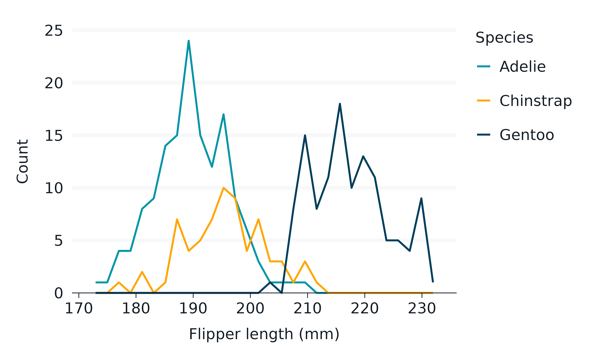
9. Other ggplot2::geom_* arguments via
...
The ... argument provides access to all other arguments
in the ggplot2::geom_*() function.
Common arguments to add include colour,
fill, alpha, linewidth,
linetype, size and width, which
enables fixing of these to a particular value.
Use the ggplot2::geom_* help to see what arguments are
available.
penguins2 |>
gg_smooth(
x = flipper_length_mm,
y = body_mass_g,
linewidth = 1,
linetype = "dashed",
level = 0.999,
se = TRUE,
blend = "multiply",
) 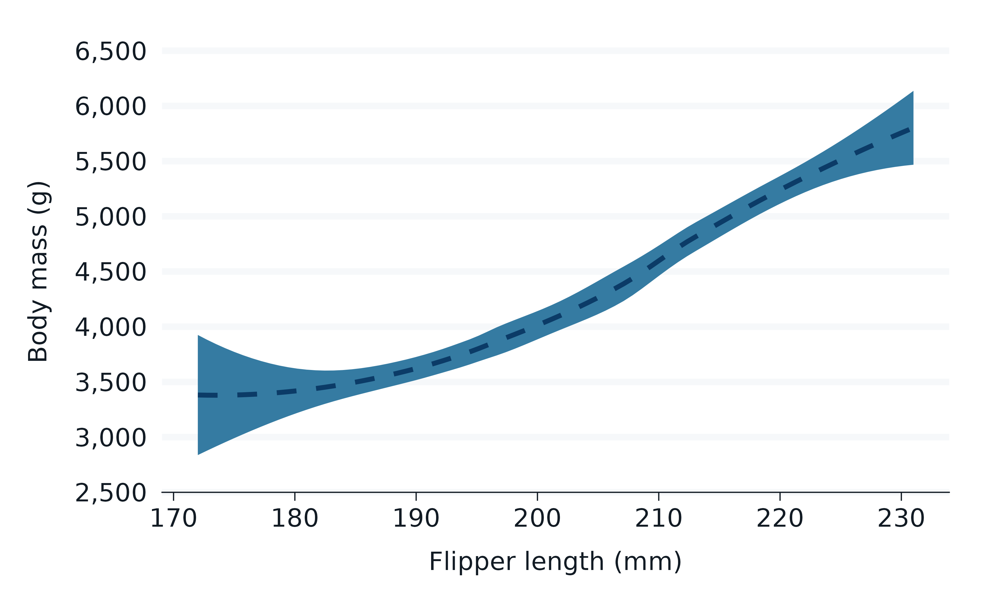
10. Families of *_mode_* themes with legend
variants
light_mode_* and dark_mode_* theme families
are provided with variants that differ based on legend placement with
suffix r (right), b (bottom), and
t (top). These functions were built for use with the
theme argument - and have flexibility to adjust colours,
linewidths etc.
penguins2 |>
gg_histogram(
x = flipper_length_mm,
col = species,
title = "Penguin flipper length by species",
subtitle = "Palmer Archipelago, Antarctica",
caption = "Source: Gorman, 2020",
theme = dark_mode_t() + theme(legend.title = element_blank()),
) 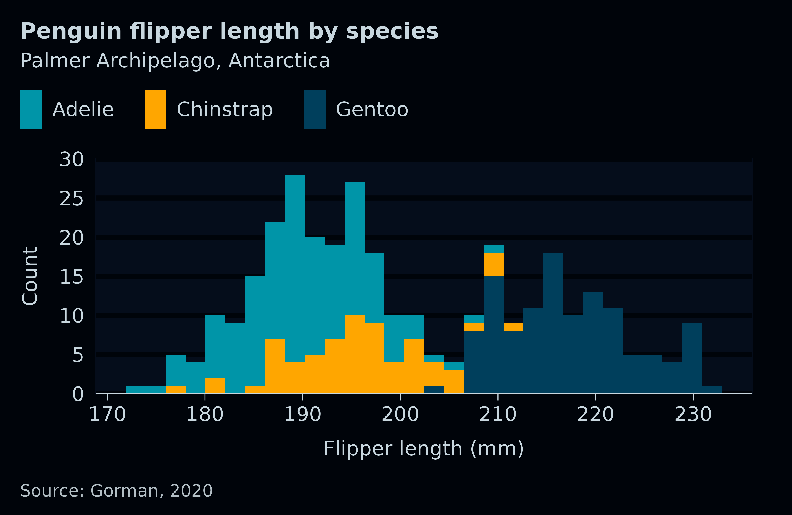
11. Side-effects to the theme based on the
theme_orientation
The gg_* function adds helpful side-effects to the theme
based on the theme_orientation,
theme_axis_line_rm, theme_axis_ticks_rm and ,
theme_panel_grid_rm arguments.
For the default where theme_axis_line_rm,
theme_axis_ticks_rm and , theme_panel_grid_rm
all equal TRUE:
- Where
theme_orientation = "x", thegg_*function will remove the y axis line/ticks and the x gridlines from thetheme(by changing their colour to “transparent”). - Where
theme_orientation = "y", the opposite will occur.
If the gg_* guesses an incorrect
theme_orientation, then the user can change this. The user
can change any of these side-effects by setting
theme_axis_line_rm, theme_axis_ticks_rm or ,
theme_panel_grid_rm to FALSE.
Any theme used should be designed to anticipate the
side-effects desired.
The effect of this is to enable one theme to be used across all plots whether the plot is vertical or horizontal.
p1 <- penguins2 |>
gg_jitter(
x = sex,
y = bill_depth_mm,
)
p2 <- penguins2 |>
gg_jitter(
x = bill_depth_mm,
y = sex,
)
p1 + p2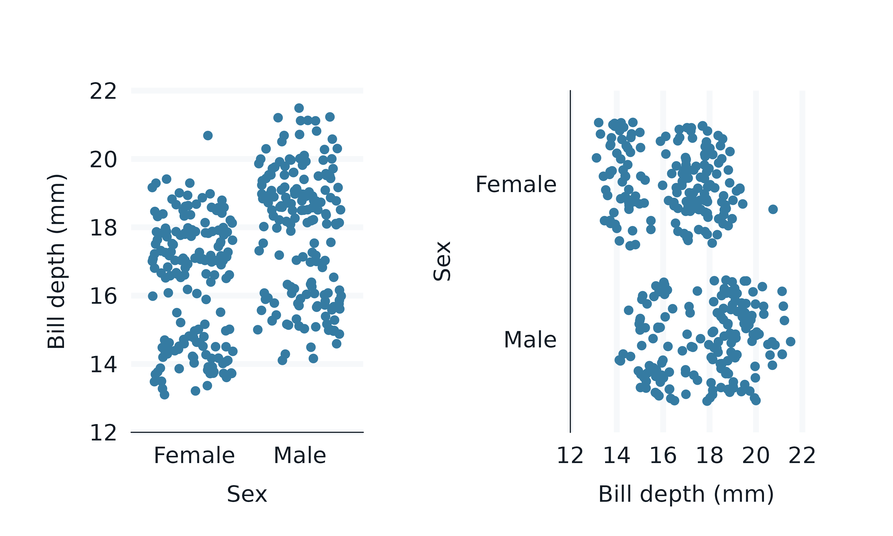
12. One *_symmetric continuous scale
A *_symmetric continuous scale can be made where:
-
x_transformandy_transformare NULL - the
statis not “sf” - if faceted, the relevant scale is “fixed”
Both symmetric continuous scales cannot be made where the stat is not ‘identity’.
By default, the gg_* function will make a x_symmetric
scale if there is a y discrete axis and a x continuous axis. Otherwise,
it will make a y_symmetric scale.
A y_symmetric axis makes:
- the limits locked to the range of the
y_breaks - the
y_expanddefault toc(0, 0).
The vice versa occurs for an x_symmetric axis.
Use *_symmetric = FALSE to revert to the normal limits
and expand defaults (i.e. the limits of the range of the data with
*_expand = c(0.05, 0.05)).
Note all continuous scales ensure all data is kept using
scales::oob_keep - and, by default, are left unclipped
(i.e. coord_cartesian(clip = "off").
13. Ability to add multiple geom_* layers
Users can make plots with multiple ggplot2::geom_*
layers.
The gg_*() geom layer will be the bottom geom layer of
the plot, and each subsequent geom_*() layer is placed on
top.
Aesthetics added directly (e.g. x, y etc.)
to the gg_*() function will inherit to later
geom_*() layers, whereas those added to the
mapping argument will not.
penguins2 |>
gg_violin(
x = species,
y = bill_depth_mm,
outliers = FALSE,
) +
geom_boxplot(
width = 0.25,
colour = lightness[1],
fill = lightness[2],
) +
geom_jitter(
colour = navy,
) 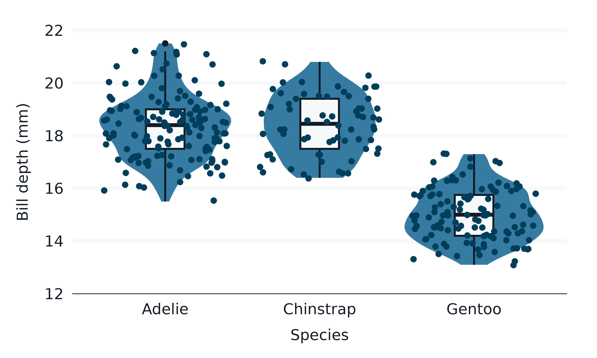
The scales are built within the gg_*() function
without knowledge of later layers. The gg_*()
function builds scales with regard to the stat,
position, and aesthetics (that the geom understands) etc.
So, in some situations, users will need to take care.
penguins2 |>
group_by(species, sex) |>
summarise(
lower = quantile(bill_depth_mm, probs = 0.05),
upper = quantile(bill_depth_mm, probs = 0.95),
bill_depth_mm = mean(bill_depth_mm, na.rm = TRUE),
) |>
labelled::copy_labels_from(penguins2) |>
gg_blanket(
y = species,
x = bill_depth_mm,
xmin = lower,
xmax = upper,
col = sex,
position = position_dodge(),
x_limits_include = 0,
) +
geom_col(
width = 0.75,
position = position_dodge(),
) +
geom_errorbar(
width = 0.1,
position = position_dodge(width = 0.75),
colour = lightness[1],
) 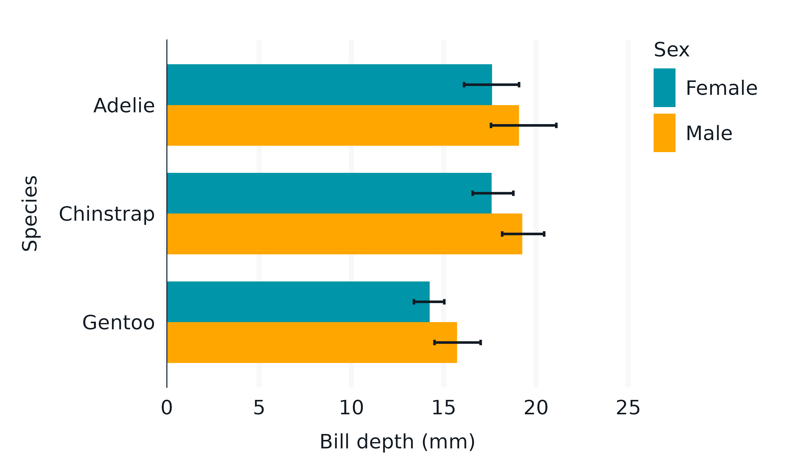
14. Arguments to customise setup with
set_blanket()
The set_blanket function sets customisable defaults for
the:
- the geom defaults, including the colour (and fill) of geoms
- the colour (and fill) palettes for discrete, continuous and ordinal
- the theme, and how/what side-effects are to be applied
- the function to apply to a unspecified/unlabelled
x_label,y_label,col_labeletc.
Note the theme argument in set_blanket can
also be used to default a *_label to NULL
(e.g. set_blanket(theme = list(dark_mode_r(), labs(colour = NULL, fill = NULL)))).
Users should try to do as much as possible in these set-up functions,
rather than continually adding arguments to their gg_*
functions.
set_blanket(
theme = rlang::list2(
light_mode_t(
base_size = 9,
axis_line_colour = "#78909C",
panel_grid_colour = "#C8D7DF",
panel_background_fill = "#E8EFF2",
axis_line_linewidth = 0.25,
panel_grid_linewidth = 0.25,
),
labs(colour = NULL, fill = NULL),
),
colour = "tan",
col_palette_d = c("#003f5c", "#bc5090", "#ffa600", "#357BA2"),
col_palette_na_d = "#78909C",
)
p1 <- penguins2 |>
gg_point(
x = bill_depth_mm,
y = flipper_length_mm,
)
p2 <- penguins2 |>
gg_bar(
y = sex,
col = species,
position = "dodge",
)
p1 + p2
15. A gg_blanket() function with geom
flexibility
The package is driven by the gg_blanket function, which
has a geom argument with ggplot2::geom_blank
defaults for geom, stat and
position.
All other functions wrap this function with a fixed
geom, and their own default stat and
position arguments as per the applicable
geom_* function.
This function can often be used with geoms that do not have an
associated gg_* function.
geom_spoke()
#> geom_spoke: na.rm = FALSE
#> stat_identity: na.rm = FALSE
#> position_identity
expand.grid(x = 1:10, y = 1:10) |>
tibble() |>
mutate(angle = runif(100, 0, 2*pi)) |>
mutate(speed = runif(100, 0, sqrt(0.1 * x))) |>
gg_blanket(
geom = "spoke",
x = x,
y = y,
col = speed,
mapping = aes(angle = angle, radius = speed),
) +
geom_point()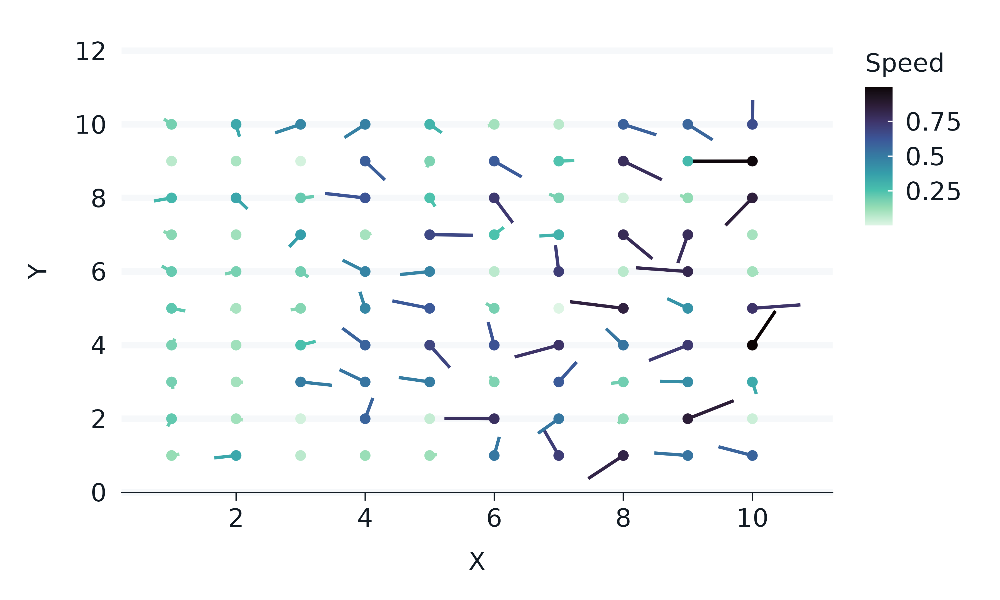
Further information
See the ggblanket website for further information, including articles and function reference.